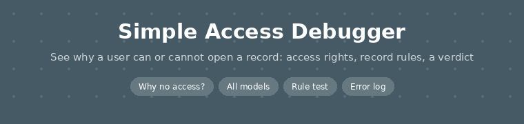
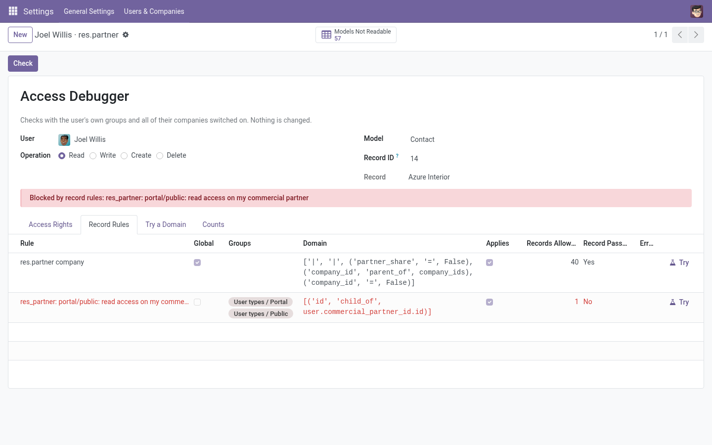
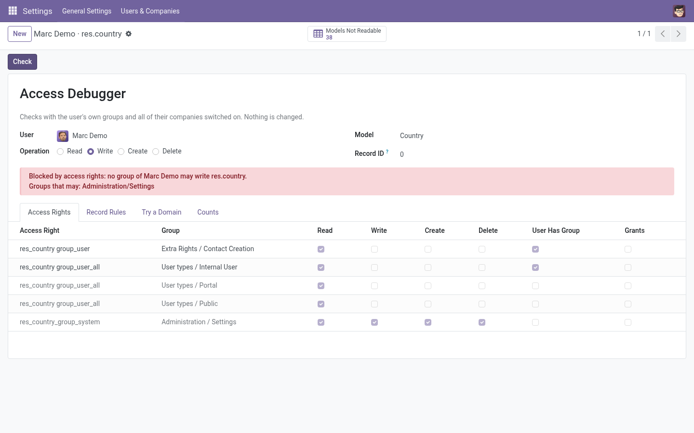
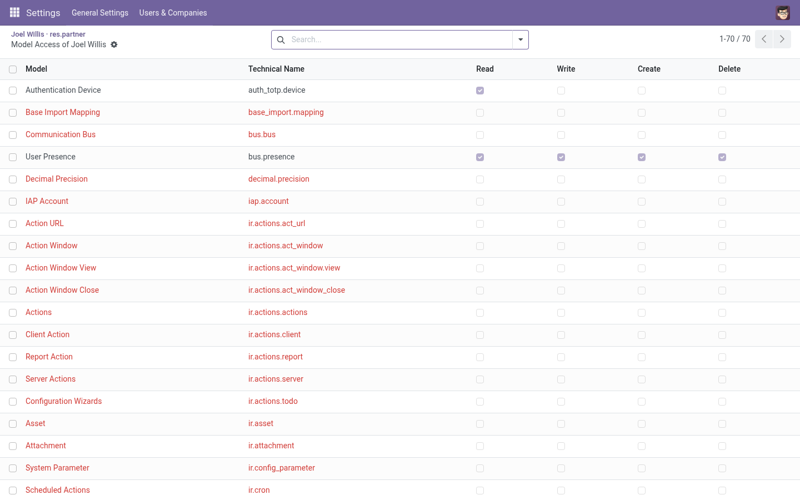

“You are not allowed to access this document” — but why? Pick the user, the model and the record, and see the access right or record rule that blocks them.
Odoo 17.0 Community & Enterprise Free · LGPL-3

A portal user cannot read another company's contact: the red rule is the one that blocks them.
Allowed, blocked by access rights with the groups that would allow it, or blocked by the named record rules.
Every access right and rule of the model, which ones apply to the user, and whether the chosen record passes.
Type a domain and see how many records it matches for that user; Try on a rule copies its domain there.
Every model with the user's read, write, create and delete rights; the ones they cannot read are red.
Checks as the user with their own groups and companies; nothing about the user or the rules is changed.
Log Access Errors writes the user, their groups, the failing rules and the calling code to the server log.

Blocked by access rights: none of the user's groups may write, and the verdict names the group that may.

Models Not Readable: every model with the user's rights, unreadable ones in red.
Free and open source (LGPL-3) by Paulius Gaizauskas · Questions or bugs: GitHub issues